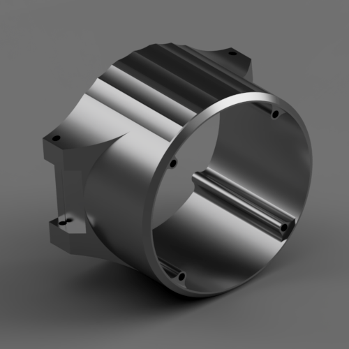

About Me:

Hello there, welcome to my humble little portfolio. I suppose you're here to learn about who I am and what I do
eh? Well, that's a
darn good question, so here's a bit of a back story. I grew up always tinkering, building, and trying to figure
out how things worked.
I loved to build with Legos, make Hot-Wheel tracks and mess around with RC cars, things like that. Making my
own version of things I guess
you could say. Fast forward to highschool, there I wanted to learn as much as I could in shops, working with
metal and woods to make
generally useless things but were still fun to make. But they lacked a bit of automation and control. So I
decided to take Comp Sci, a
self taught course at my school. I never really did well with it, but I still wanted to learn it. At that time
I picked up a 3D printer
kit to prototype any random ideas I could come up with. Which ended up pushing me to pursue Engineering at U of
M, with the idea that
I would minor in Computer Science. I lasted about half a semester, things kind of went awry. I figured "Okay,
just another step to my future".
I still wanted to go back to school, but I didn't want to repeat the same thing previously at Uni. So I worked
for 3 years, bouncing between
different things, trying to figure out a future for myself. Then I saw that M.I.T.T had a course for Software
Development. I was incredibly
excited! I enroled in april of 2018, and I got a response of my entrance test in early May. I made it in! I
worked hard
all summer to save and support myself over the period that I would be at school. So, ever since that, I've been
in class working as hard
as I can, so I can understand how to properly program so that I could make whatever I saw fit.
It's practically boundless the things that you can do with programming knowledge. I'd love to create
my own game someday, IoT devices, home automation software, vehicle interface software, drone software, etc.
The ideas are endless, and yes, likely most
wont even work out, but that doesn't mean I shouldn't try. Failure is always a lesson to learn from.
If you combined that with creating things outside of computers, and you get things like Tesla, Drones, other
various projects that use microcontrollers to interact with the world.
Isn't it just so cool!?! That's been my motivation as to why I am here in this industry specifically. Building
and creating, and I'll
be following that dream as long as I'm living and breathing.
You made it to the end eh? That's crazy! But I appreciate you taking the time to get a glymps into my life and
motivations.
Lets build something awesome together in the future eh?! - Donny
Projects

Code Wars Solutions
These are some of my Code-Wars "kata" solutions if you're interested. The may not be pretty, but I'm still learning of course.
Printing out Pascals triangle:
Write a function that, given a depth (n), returns a single-dimensional array/list representing Pascal's
Triangle from the first to the n-th level.
Example:
pascalsTriangle(4) == [1, 1, 1, 1, 2, 1, 1, 3, 3, 1]
Matrices: Up and Down Sorting For Each Column:
You are given a matrix M, of positive and negative integers. It should be sorted in an up and down column
way, starting always with the lowest element placed at the top left position finishing with the highest
depending on n value: at the bottom right position if the number of columns,n, is odd, or placed at the top
right, if n is even.
Example:
Input = [[-20, -4, -1],
[ 1, 4, 7],
[ 8, 10, 12]]
Output = [[-20, 7, 8],
[-4, 4, 10],
[-1, 1, 12]]
Persistent Bugger:
Write a function, persistence, that takes in a positive parameter num and returns its multiplicative
persistence, which is the number of times you must multiply the digits in num until you reach a single digit.
Example:
"is2 Thi1s T4est 3a" --> "Thi1s is2 3a T4est"
Count the odd int:
Given an array, find the int that appears an odd number of times.
Example:
findOdd([1,1,1,1,1,1,10,1,1,1,1]) === 10